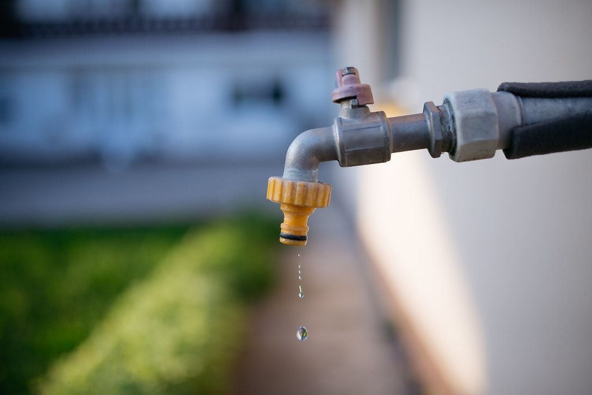

Damlayan musluk mu?
Tıkanan gider, sızan boru, durmadan dolan rezervuar ya da kapatınca bile damlayan musluk. Sancaktepe Yenidoğan'daki Tesisat Hizmeti, su tesisatı ve tıkanıklık açma işlerinde adresinize gelir.
Bu musluk kapalı ama damlıyor. Kolu sıkıca kapatmayı ya da ara musluğu kapatmayı deneyin.
0 damla düştü, siz bu sayfadayken.
Hat üzerindeki dört arıza
Evdeki su hattında en sık karşılaşılan dört dert. Hangisi size benziyor? Belirtilere bakın, arıza seçiciyle birkaç adımda bildirin.
-
Tıkanıklık
Lavabo, evye, klozet ya da banyo süzgecinde suyun gitmemesi.
- Su yavaş iniyor ya da birikiyor
- Giderden koku, fokurdama sesi
- Bir gider kullanılınca öbüründen su çıkıyor
-
Kaçak
Görünen bir borudan damlama ya da tavanda, duvarda beliren ıslaklık.
- Tavanda, duvarda leke ya da kabarma
- Lavabo ya da evye altında ıslaklık
- Su kullanılmıyorken ilerleyen sayaç
-
Musluk ve batarya
Musluk ve bataryalarda damlatma, sızıntı, tamir ya da değişim.
- Kapalıyken damlatma
- Gövdeden ya da dipten sızıntı
- Sert, gevşek ya da tam kapanmayan kol
-
Klozet ve rezervuar
Klozet ve rezervuarda arıza, sızıntı ya da değişim.
- Durmadan su dolduran rezervuar
- Zayıf ya da hiç çekmeyen sifon
- Klozet dibinde ıslaklık
Musluğunuz ne kadar su kaçırıyor?
Bir damla küçük görünür ama gün boyu durmaz. Damlaları sayın; yaklaşık ne kadar suyun boşa gittiğini litre olarak görün.
- Günde≈ 2,9 L
- Ayda≈ 86 L
- Bir yılda≈ 1.051 L
Ayda yaklaşık 8,6 kova (10 litrelik) su boşa gider.
Hesap yaklaşıktır: damla büyüklüğü musluğa ve su basıncına göre değişir. Ölçerken sayfayı damlayan musluğun yanında açın.

Damlayı durdurmak için
- Musluğun altındaki ara musluğu kapatın; yoksa ana vanayı.
- Damlanın musluğun ucundan mı, gövdesinden mi geldiğine bakın.
- Kolu zorlamayın: kapalı musluğun damlatması çoğu zaman conta ya da kartuş yıpranmasıdır.
- Fotoğrafını çekip arıza seçiciden gönderin.
Su kaçağında ilk dakikalar
Su beklenmedik bir yerden akmaya başladığında sırayla şunları yapın. Usta gelene kadar zararı en aza indirir.
- Önce
Ana vanayı kapatın
Ana vana çoğu evde su sayacının hemen yanındadır: daire girişinde, mutfak ya da banyo dolabında, bazen apartmanın sayaç dolabında. Yerini şimdiden öğrenin.
- Hemen ardından
Elektriğe dikkat edin
Su prize, lambaya ya da elektrikli bir cihaza ulaştıysa o bölümün sigortasını kapatın. Islak zemine basarken fişe ve şaltere dokunmayın.
- Sonra
Suyu toplayın, haber verin
Kova ve bezle suyu toplayın, eşyaları kaldırın. Su aşağı iniyorsa alt kattaki komşunuza haber verin.
- En son
Fotoğraflayıp yazın
Islak alanın ve suyun geldiği yerin fotoğrafını çekin, arıza seçiciden gönderin ya da arayın.
Gaz kokusu mu alıyorsunuz? Bu bir su tesisatı arızası değildir. Elektrik düğmelerine dokunmayın, ateş yakmayın, kapı ve pencereleri açın; ortamdan çıkıp 187 Doğalgaz Acil'i arayın.
187'yi araArızadan çözüme giden hat
Bir arıza bildirdiğinizde iş genellikle bu sırayla ilerler.
Bildirin
Arayın ya da WhatsApp'tan yazın. Arıza seçici, mesajı sizin yerinize hazırlar.
Fotoğraf gönderin
Arızanın ve çevresinin fotoğrafı, gerekebilecek parçanın önceden anlaşılmasına yardım eder.
Arıza yerinde görülür
Adresinize gelinir, sorunun kaynağına bakılır.
İş ve ücret netleşir
Yapılacak iş ve ücret, işe başlamadan önce sizinle konuşulur.
Yenidoğan, Namzet Sokak
Tesisat Hizmeti, Sancaktepe'nin Yenidoğan Mahallesi'nde. Çalışma saatleri bu sitede yer almıyor; arıza için arayın ya da yazın, uygun zaman birlikte belirlensin.